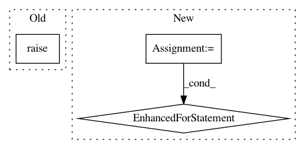

07b0eddeeccf9ccedc16ef81dd5adb3c43b52322,gluonnlp/model/utils.py,,apply_weight_drop,#Any#Any#Any#Any#Any#,27
Before Change
reg_param_dict[local_param_name] = dropped_param
local_attr = getattr(block, local_param_name)
if local_attr == param:
super(Block, block).__setattr__(local_param_name, dropped_param)
else:
if isinstance(local_attr, (list, tuple)):
if isinstance(local_attr, tuple):
After Change
if not rate:
return
existing_params = _find_params(block, local_param_regex)
for (local_param_name, param), \
(ref_params_list, ref_reg_params_list) in existing_params.items():
dropped_param = WeightDropParameter(param, rate, weight_dropout_mode, axes)
for ref_params in ref_params_list:
ref_params[param.name] = dropped_param
for ref_reg_params in ref_reg_params_list:
ref_reg_params[local_param_name] = dropped_param
if hasattr(block, local_param_name):
local_attr = getattr(block, local_param_name)
if local_attr == param:
local_attr = dropped_param
elif isinstance(local_attr, (list, tuple)):
if isinstance(local_attr, tuple):
local_attr = list(local_attr)
for i, v in enumerate(local_attr):
if v == param:
local_attr[i] = dropped_param
elif isinstance(local_attr, dict):
for k, v in local_attr:
if v == param:
local_attr[k] = dropped_param
else:
continue
if local_attr:
super(Block, block).__setattr__(local_param_name, local_attr)
// pylint: enable=too-many-nested-blocks
def _find_params(block, local_param_regex):
// return {(local_param_name, parameter): (referenced_params_list,
// referenced_reg_params_list)}
In pattern: SUPERPATTERN
Frequency: 3
Non-data size: 3
Instances
Project Name: dmlc/gluon-nlp
Commit Name: 07b0eddeeccf9ccedc16ef81dd5adb3c43b52322
Time: 2018-08-12
Author: szha@users.noreply.github.com
File Name: gluonnlp/model/utils.py
Class Name:
Method Name: apply_weight_drop
Project Name: chainer/chainercv
Commit Name: e1ea402518d0a85d6f908a85725f7c4b780fb76b
Time: 2017-05-16
Author: yuyuniitani@gmail.com
File Name: chainercv/links/model/faster_rcnn/faster_rcnn_vgg.py
Class Name: VGG16FeatureExtractor
Method Name: __call__
Project Name: PetrochukM/PyTorch-NLP
Commit Name: 2a1a6851344172e0134f3c5f4f5c1021975f2812
Time: 2018-03-11
Author: petrochukm@gmail.com
File Name: torchnlp/samplers/bucket_batch_sampler.py
Class Name: BucketBatchSampler
Method Name: __iter__